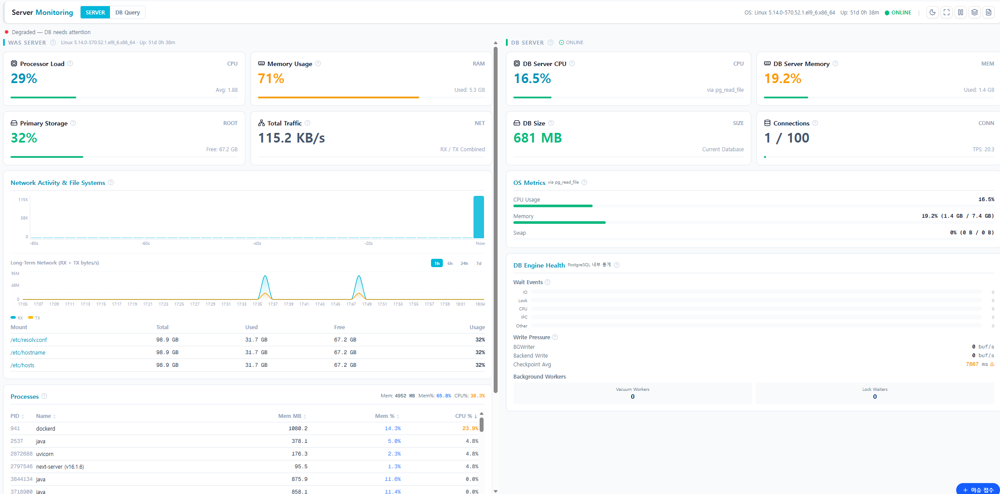

Docker 컨테이너부터 DB 쿼리 분석, API 상태 모니터링, 실시간 로그 스트림까지. 운영팀이 필요한 모든 도구를 통합 콘솔로 제공합니다.
클라우드 기반 Docker 컨테이너 상태와 GitHub Actions 배포 이력을 한 화면에서 모니터링합니다. FE/BE 배포를 별도로 확인 가능합니다.
백엔드 모니터링 기반 실시간 쿼리 분석. 그래프에서 구간을 드래그하면 해당 시점의 Top 10 슬로우 쿼리를 즉시 확인합니다.
백엔드의 모든 엔드포인트 호출 현황을 실시간으로 추적합니다. 오류 발생 시 즉시 알림하고 응답 지연 패턴을 분석합니다.
서버 로그를 실시간으로 스트리밍하며 ERROR/WARN 레벨을 즉시 감지합니다. AI에게 에러 원인과 해결방법을 바로 물어볼 수 있습니다.
N8N 비주얼 워크플로우 빌더를 시스템에 임베드하여 제공합니다. 주문 접수 알림, 이상 감지 경보, 정기 보고서 발송 등을 코드 없이 구성합니다.